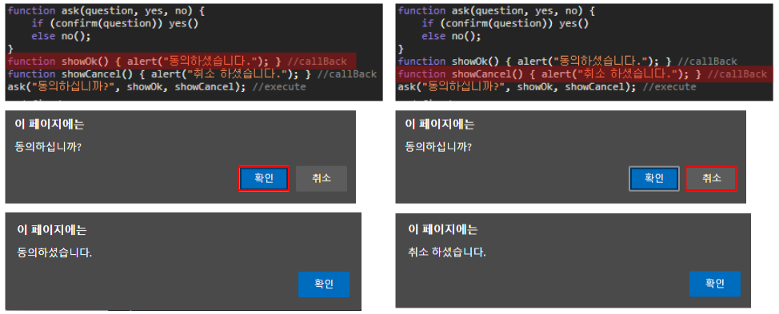
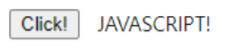

*개인적인 공부 내용을 기록하는 용도로 작성한 글 이기에 잘못된 내용을 포함하고 있을 수 있습니다.
*지속적으로 내용을 추가 및 수정할 예정이며, 잘못된 내용에 대한 지적은 언제나 환영합니다!
_미완성된 글 입니다.
# 콜백함수
콜백함수란 함수 안에 파라미터 형태로 들어가는 함수를 의미한다. 콜백함수를 이용하면 함수의 매개변수로 함수를 전달해 코드를 순차적으로 실행할 수 있도록 작성할 수 있다.
다음 코드의 동작 과정을 살펴보자. ask 함수 파라미터의 기능은 다음과 같다.
question : 문자열을 입력받아 confrim 메시지 창에 출력한다.
yes : confirm의 yes를 눌렀을 때 실행되는 함수이다.
no : confrim의 no를 눌렀을 때 실행되는 함수이다.
function ask(question, yes, no) {
if (confirm(question)) yes()
else no();
}
function showOk() { alert("동의하셨습니다."); }
function showCancel() { alert("취소 하셨습니다."); }
ask("동의하십니까?", showOk, showCancel);여기서 showOk()와 showCancel()을 콜백함수라고 부른다. 함수(showOk, showCancel)를 함수의 파라미터(yes, no)로 보낸 뒤 파라미터로 보낸 함수를 나중에 호출(call back) 하는 것이 콜백함수의 개념이다.
브라우저 메시지 창에서 yes를 누르면 showOk가 콜백되고, no를 누르면 showCancel이 콜백된다.

# 이벤트 헨들러 & 이벤트 리스너
JS의 이벤트 헨들러와 이벤트 리스너가 대표적인 콜백함수의 예시이다.
addEventListener의 첫번째 인자에는 발생 이벤트(클릭)를 두 번째 인자에는 첫 번째 인자로 설정한 이벤트가 발생했을 시 실행할 함수를 넣어 준다. 여기서 두 번째 인자에 넣은 함수가 바로 콜백함수이다.
<html lang="ko">
<head>
<meta charset="UTF-8">
<title>test</title>
</head>
<body>
<button id="click">Click!</button>
</body>
<script>
let a = document.getElementById("click");
a.onclick = prt; //event handler
a.addEventListener("click",prt); //event listener
function prt(){
document.write("JAVASCRIPT!");
}
</script>
</html>